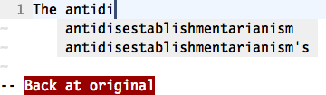

{% include JB/setup %}
{% raw %}
<div>


<table class="arr-recipe" id="N1BCB6">
<tr class="calibre14">
<td class="arr-recipe-number">Tip 114</td>
<td class="arr-recipe-name">Autocomplete Words from the Dictionary</td>
</tr>
</table>
<p id="N1BCBC" class="calibre4">
<span class="calibre5">
        Vim’s dictionary autocompletion builds a list of suggestions from a word list. We can configure Vim so that dictionary autocompletion uses the same word list as the built-in spell checker.
    </span>
</p>
<p id="N1BCCF" class="calibre4">
      Sometimes we might want to use autocompletion on a word that isn’t present in any of our open buffers, included files, or tags. In that case, we can always resort to looking it up in the dictionary. This can be triggered by running the <span class="calibre17">&lt;C-x&gt;&lt;C-k&gt;</span> command (see <strong xmlns:str="http://exslt.org/strings" class="calibre10">compl-dictionary</strong>
<a xmlns:str="http://exslt.org/strings" href="http://vimdoc.sourceforge.net/htmldoc/insert.html#compl-dictionary">
​</a>).
    </p>
<p id="N1BCD9" class="calibre4">
      To enable this feature, we need to supply Vim with a suitable word list. The easiest way to do this is by running <code class="cf">:set spell</code> to enable Vim’s spell checker (see <a xmlns:str="http://exslt.org/strings" href="f_0159.html#chp.spell.check">Chapter 20, ​<em class="calibre5">Find and Fix Typos with Vim’s Spell Checker</em>​</a>, for more details). All of the words in the spelling dictionary become available through the <span class="calibre17">&lt;C-x&gt;&lt;C-k&gt;</span> command.
    </p>
<p id="N1BCEB" class="calibre4">
      If you don’t want to enable Vim’s spell checker, you can also use the <code class="cf">‘dictionary’</code> option to specify one or more files containing word lists (see <strong xmlns:str="http://exslt.org/strings" class="calibre10">'dictionary'</strong>
<a xmlns:str="http://exslt.org/strings" href="http://vimdoc.sourceforge.net/htmldoc/options.html#'dictionary'">
​</a>).
    </p>
<p id="N1BCF5" class="calibre4">
      Dictionary autocompletion is perhaps most useful when you want to complete a word that is long or difficult to spell. Here’s an example:
    </p>
<div xmlns:str="http://exslt.org/strings" class="calibre1">

</div>
<p id="N1BCFC" class="calibre4">
      There’s one other form of autocompletion that uses the spelling dictionary. We’ll find out how to use it in <a xmlns:str="http://exslt.org/strings" href="f_0163.html#sec.spelling.autocompletion">Tip 121</a>.
    </p>
<script src="scripts/book_local.js" type="text/javascript" class="calibre2"/>
</div>

{% endraw %}

